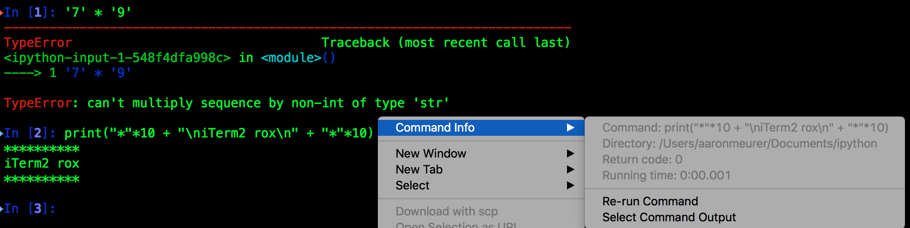

IPython¶
IPython shell integration extension
Enables iTerm2 shell integration in the IPython shell.
Note
This does not yet work with IPython 5.0. See https://github.com/asmeurer/iterm2-tools/pull/6.
To load, use:
%load_ext iterm2_tools.ipython
To load every time IPython starts, add:
try:
import iterm2_tools.ipython
c.TerminalIPythonApp.extensions.append('iterm2_tools.ipython')
except ImportError:
pass
to your IPython configuration file.
Some notes about this:
- iTerm2’s shell integration only supports single line commands. For multiline code, the first line will be saved as the command.
- The “Out” prompt will be included in the captured output. This is because the captured output is begun as soon as the code is executed. This is done so that text printed to stdout will be included (e.g., if you run “print(‘hello’)” there will be no “Out” prompt).
- If an exception is raised, the command status will be set to 1 (making the iTerm2 shell integration arrow turn red). Otherwise it will be set to 0.
- However, due to a bug in IPython, SyntaxErrors will not register as failures (the arrow next to the prompt won’t turn red).
- This requires a version of IPython greater than 4.0.0. Otherwise, due to a bug in IPython, the invisible codes printed in the prompt will be read by IPython as not invisible, causing the “Out” prompt to indent several characters (however, aside from this bug, it should work fine).
- This code adds a
set_custom_exchandler to IPython to check the command status. IPython currently only supports one exc_handler at a time, so this may break other code that also uses this functionality.